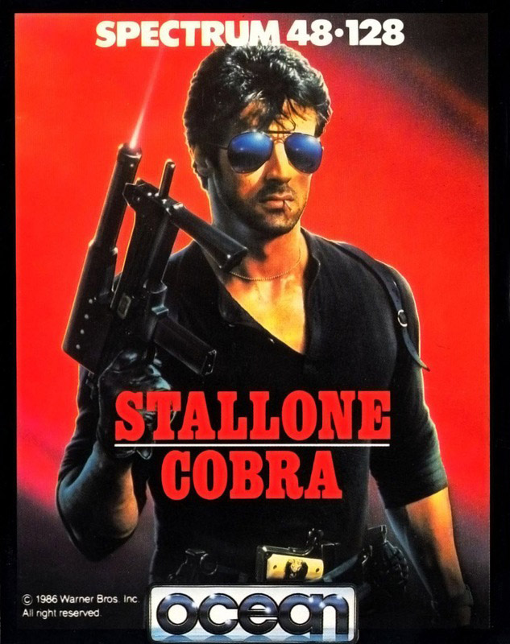
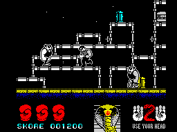
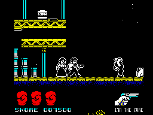

Cobra


{kind=link}

| Publisher: | Ocean |
| Price: | £7.95 |
| Year: | 1986 |
| Source: | CRASH, Issue 35 |

Ocean’s latest Game of the Film release follows the psychotic adventures of big tough guy Cobra, played in the movie by Sylvester Stallone. Top model Ingrid Knutsen (very probably Brigitte Neilson) is getting some serious hassle from a band of mean and dirty killers, who are set on capturing her for themselves and doing horrible things to her before handing the poor girl over to the evil Night Slasher (eek). Your job as the Cobra is to ensure her safety and kill the opposition before they kill you.
The nasties in the game are not exclusively male. Large women with bazookas hem in our hero and fire their artillery at him from all angles. Huge hunking men brandishing knives are out for his blood, and at the end of the final level there is the ultimate challenge for Cobra — to battle against the Night Slasher (eek). Cobra is a Real Man, and the thought of knife brandishing hunks doesn’t scare him in the least. However, the mere sight of a pram hurtling towards him makes the poor man go all weak at the knees and he is momentarily stunned making it easier for the bad guys to get at him.

head butts a knife wielding maniac
To begin with Cobra has no weapon and must defend himself with his nut, by head-butting everyone with such force that their little footies don’t even touch the ground as they go flying off the screen.
Weapons can be found cunningly concealed inside Hamburgers. Each one of these tasty delicacies contains a specific weapon. This could be a dagger, a pistol or the ultimate in blast-everything in-sight-weapons, a laser sighted machine gun. However, when Cobra has this handy device the opposition really gang up on him, seemingly making his job twice as hard, but in reality topping up those points. In some Hamburgers there is even a facility to make our Hero completely hard and untouchable. Cobra can pick a weapon up by walking into it. When he has a weapon in his possession a duck appears at the bottom of the screen. The weapon only lasts for a limited amount of time and this is shown by the duck gradually being eaten away. Once the duck has disappeared from the bottom of the screen, Cobra will have to resort to using his head again. Our hero can also lose his weapon if one of the nasty bully-boys walk into him, but at least he doesn’t lose a life when this happens.

maniac is dispatched with the laser gun.
He’s found his girlfriend, and the
disappearing duck shows how much
longer he’ll have his weapon
There are three levels to the game. The first takes place in the city at night. Using the platforms, Cobra must leap about dispatching the enemy. Once every baddie has been killed and all the hamburgers used, Cobra will automatically move on the next level. The second section of the game takes place in lovely rural countryside, but fear not, the bloodshed still goes on. If Cobra manages to get through this, then it’s on to the factory floor and the confrontation with the Night Slasher (once again — eek!)
Meanwhile Ingrid is getting some serious hassle from the bad guys (and gals). In between biffing everything in sight, Cobra must somehow locate Ingrid and protect her from the ravenous hordes. Ingrid usually appears by Cobra when he has a weapon with him or is doing particularly well against the enemy (typical woman). She’s a loyal sort of girl, and will stick by Cobra’s side unless he inadvertently shoots her, in which case she’ll shoot off pretty sharpish. Any contact with the baddies in the game will result in Cobra losing a life, unless he has his woman with him. When Ingrid is by his side and a baddy gets him, Cobra doesn’t lose a life, but she disappears and he must track her down again.
Cobra has three lives to start with, but extra lives will be awarded for the first 10,000 points and every 20,000 points after that. These lives are shown at the bottom of the main screen and are represented by boxing gloves. Under the boxing gloves is the score chart, points are awarded for killing the opposition and collecting weapons. In the centre of the screen is the Duckometer. This is replaced by the Cobra logo when no weapon is being held. To the far right of the screen is the weapon icon which shows the type of weapon currently being held.
CRITICISM
“I loaded up Cobra with some trepidation, what would it be like? Well to put your minds at rest, I found Cobra to be a brilliant mindless ‘kill everything in sight’ game. The presentation is superb, and Ocean have made full use of the film tie in; even down to defining a ‘murder’ key, and having colour/mono, sound/mute options. The sound is extremely well done, with lots of decent dittys and spot effects. The graphics are very well detailed and realistic, and the explosions are very well animated. The scrolling is very smooth and fast, and the characters move about very quickly. This all means that there’s no time to think, you just have to head butt or murder every one you see. Cobra is very addictive and well worth the asking price.”
“Yeah, the hard guy is back and beating the insides of your Speccy into shape. What a game, but why is Mr Macho scared of babies? All in all the game is extremely playable, it has all the good points of say Green Beret and Commando plus a lot more although I can see myself getting a bit tired with it after a while. The graphics are truly the best that I’ve seen in a ‘hard guy game’, everything is detailed and well animated, the scrolling of the screen is superb. The sound too is second to none, there is a multitude of tunes on the title screen, during the game and, even one when the game is paused. This is in my view the best smash of the issue, we’ll have to wait for a while to see a game that betters this. Go out and buy it now, no self-respecting games player should be without a copy.”
“Though very Green Beretish in style, I think that Cobra has a lot of points in its favour. The graphics are superb and the scrolling is very effective. Loads of colour and some very good tunes have been included. it took me a long time to actually get into Green Beret and I think that that’s one of the reasons why it didn’t receive a Smash. That problem, I think is overcome because the similarity means that playing techniques are the same to an extent. Cobra is a good game; nice graphics, well used colour and a fair share of playability.”
COMMENTS
| Control keys: | Definable |
| Joystick: | Kempston, Sinclair, Cursor |
| Keyboard play: | Pretty sharp |
| Use of colour: | Wow! |
| Graphics: | Finely detailed with excellent scrolling |
| Sound: | The best on the Spectrum for years |
| Skill levels: | One |
| Screens: | Three levels of wrap around scrolling play area |
| General rating: | The best Hard Guy game there is |
| Use of computer: | 93% |
| Graphics: | 91% |
| Playability: | 94% |
| Getting started: | 90% |
| Addictive qualities: | 92% |
| Value for money: | 91% |
| Overall: | 93% |